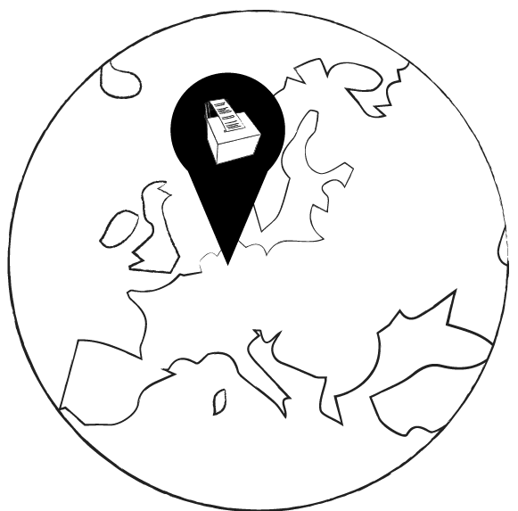

<!DOCTYPE html>
<html id="top">
    <meta name="viewport" content="width=device-width, initial-scale=1">
<head>
<title>Manifest Machine</title>
<link rel="stylesheet" href="style.css">
<link rel="stylesheet" href="https://unpkg.com/flickity@2.2.2/dist/flickity.min.css" media="screen">
<link href='https://fonts.googleapis.com/css?family=Quicksand' rel='stylesheet'>
<link href='https://fonts.googleapis.com/css?family=Raleway' rel='stylesheet'>

<script src="https://unpkg.com/flickity@2.2.2/dist/flickity.pkgd.min.js"></script>

<script src="https://cdnjs.cloudflare.com/ajax/libs/socket.io/2.0.3/socket.io.js"></script>
<script src="https://ajax.googleapis.com/ajax/libs/jquery/3.5.1/jquery.min.js"></script>
<script src="https://unpkg.com/axios/dist/axios.min.js"></script>
<script src="script.js"></script> 

<script>

// socket connection to server.js
var socket = io.connect(); //load socket.io-client and connect to the host

function LEDOn() {
    socket.emit("state", 1); //send button state to server
console.log("button pressed");
}

function LEDOff() {
    socket.emit("state", 0); //send button state to server
}

function MessagePrint(){
    socket.emit("WelcomeMessage", "Welcome to the digital manifest"); //send button state to server
    console.log("welcome message send");
}


</script>
 
</head>
<body>

<div class="header">
    <div class="textFlex">
        <p id="alignLeft" class='textHeading'>_Open 8:00-20:00 🕗</p>
        <p class='textHeading' > _Eindhoven 🌍</p>
        <p class='textHeading'>_ActiveVisitors:1 👀</p>
        <p class='textHeading'>_Online 🟢</p>
    </div>
    </div>
<div class="front">

<button type="button"  onclick="MessagePrint()" id="testButton" style="background-color:rgb(255, 255, 255);">Print message</button>
<!--  -->
<div class="bg"></div>

<div class="titlePage">
<h1 id="title">_The Nomad Server </h1>
    
    <p id="subTitle">where the digital design manifest is kept and collectively writen.</p>

</div>


<p id="amountSig">
    Signatures:29</p>
<p id="amountManifest">
    Contributers:7
</p>

</div>
<div class="wrapper"> 

    <div class="flexVersion">
    <p id="version">Current version: V 1.0.0<br>
        Next release: 10-05-2021</p>

        <a href="#" class="versionButton">Version History 🕙</a>
    </div>

<div class="currentManifest">

    <h1 id="manifestTitle">The Digital Design Manifest</h1>
<div id="manifestText">
<p  >
    The craft of interaction design is failing to serve humans. </p>

<p>Products and services are optimized for efficiency and standardization valuing profit over privacy. 
We, humans, are becoming the product to be consumed by our technologies. </p>

<p>Addicted by design.</p>
<p>

I believe that good interaction design can also be the remedy to this issue. Creating humane technology that operates for the common good, strengthening our capacity to tackle our biggest global challenges. 
Celebrating fluidity, creating interactions that trigger reflection and empower users. 
</p><p>
Designing things away and creating hacks.
   
</p>

<p>
    To achieve this, we need to identify different design handles that we can use in our design process.
</p>


<p>
Design handels<br>
🪢 Friction to create a moment of reflection and empowerment.<br>
👀 Visibility show what is going on so people can take a stance.<br>
🔋 Disposability of content and update rate of our digital lives.<br>

</p>


</div>
</div>


<div class="flexSign">
   
    <input placeholder="Your name" id="nameSig"></input>
    <a href="#top" onclick="onSign()" id="signButton">Sign 🖋️</a>

</div>


<div class="section">

<h2 class="title">Contribute to the manifest by donating your thoughts</h2>
<p class="text">
    What do you think of the issue of addiction by design? How do you think interaction design can work towards an empowering relationship with technology? What design handles do you think we can use to achieve this?
</p>


<div id="inputCard">

<textarea id="cardInput" placeholder="Type here..." rows="15" cols="50"></textarea>
<input id="nameCard" placeholder="Your name" ></input>
<a href="#top" onclick="onClickSubmit()" id="submitCard">Submit 💌</a>

</div>

<h3 id="examplecardtext">Donations from other contributors</h3>


  <div class="carousel"
  data-flickity='{ "imagesLoaded": true, "prevNextButtons": false, "percentPosition": false, "initialIndex": 1}'>
  
  
  

</div>

</div> 


<div class="section" >

    <h2 class="title" >About this project</h2>
    <p class="text">Where does this project live? This whole website is hosted on the manifest machine that lives in Eindhoven.The reason for this is to put the principles proposed above put in practice imediatly. With project running on a server owned by me, I take responsibility over the project. </p>


<h3 id="eindhovenTitle">EINDHOVEN, NL</h3>

<p class="text">The nomad server is printing out a log of every interaction. When people like you visit this website, sign the manifest or contribute to the project by submitting a card. This is your dialogue with the server, by making it physically available in Eindhoven and through the stream for anyone worldwide it aims to give transparency. </p>

<div class="modelImages">


</div>


    <h3 class="title" >Experiments</h3>
    <p class="text">The first three design handles of the manifest are derived from experiments done as part of the thesis Undermine_through_design by Ilse Pouwels. These experiments explored hacks or interventions to challenge our relationship with the digital.</p>

<div class="experiments">
    <div>

<h2>The Toilet(sc)roller</h2>
</div>
<div>

<h2>Singel Frame Feed</h2>
</div>
<div>

<h2>Unmatch data</h2>
</div>
</div>


</div>

<div class="section">

    <h2 class="title" >Any thoughts about this project or just want to chat <br> don't hesitate to hit me up 👋.</h2>
    <p id="textContact">
        📧 ilsepouwels.design@gmail.com<br>

        Project by Ilse Pouwels <br></p>
        <p id="thesisdisclaimer">
        This website is one of the outcomes of the thesis project for MFA Interaction Design at the Umeå Institute of Design


    </p>


</div>

<div style="height: 1000px;">


</div>


    <h3>Which principles do you think we should design by?</h3>

    <textarea id="manifest-input"  rows="4" cols="50">
    </textarea>
    
    <input id="name-input"></input>
    <button type="button" onclick="onClickSubmit()" >Submit</button>

    <p id="displayCard"> This will display the manifest<p>
        <p id="nameCard"> This will display the manifest<p></p>

<a href="https://underminethroughdesign-device.dataplicity.io/edit" class="button">Edit</a>


    <button type="button" id="state" onclick="LEDOff()" style="background-color:red;">OFF</button>
    <button type="button" id="state" onclick="LEDOn()" style="background-color:green;">ON</button>
    <button type="button"  onclick="MessagePrint()" style="background-color:rgb(0, 30, 128);">Print message</button>


</body>
</html>
